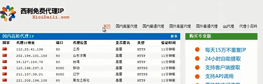
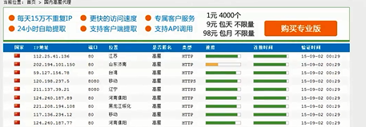
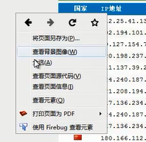
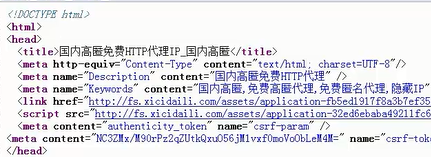
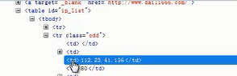

使用单一ip抓取网页过程中，经常碰到IP被封的情况；现需要获取一批代理IP进行网页抓取；
目前找到一个叫"西刺"的网站，可以提供免费代理IP，领导要求对上面的IP进行爬取，以供日后使用；
步骤：
首页
各分类IP列表连接
IP列表（多页）
具体IP获取
①进入“西刺”首页：

②点击国内匿名代理，进入到国内匿名代理：

③在页面上点击右键，然后点击“查看也页面源代码”


④由于代码没有规律可循，我们可以右击某一个IP，点击“使用firebug查看元素”，此时的代码是已经结构化的源代码：

可选方式：
1，文本文件；
2，csv文件；
3，json文件；
4，jsonlines文件；
5，数据库（存储在本地数据库会非常方便）
6，云存储
1，在spider中编写页面的抽取规则，并返回结果或者request；
2，在item pipelines中对所获得结果进行处理，即存储；
3，在settings.py中启用item pipelines，并设置其他参数，比如：
数据库连接参数；日志文件名称；
【本文由麦子学院独家原创，转载请注明出处并保留原文链接】